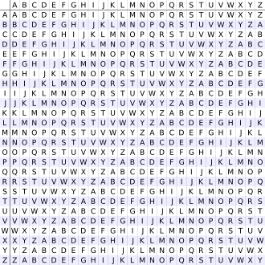

Inventada por Giovan Battista Bellaso por volta de 1553, mas ficou erroneamente conhecida por ter sido atribuída a Blaise de Vigenère séculos depois.
Conhecida como "le chiffre indéchiffrable" (a cifra indecifrável), foi considerada por muito tempo inquebrável, um dos métodos de criptografia mais seguros da época.
Permaneceu sem solução por mais de 200 anos, até que o método de quebra foi publicado por Charles Babbage, por volta de 1854.
Ataques modernos utilizam o Teste de Kasiski e o índice de coincidência para determinar o tamanho da chave.
Diferente da Cifra de César, que usa um único deslocamento para toda a mensagem, a Cifra de Vigenère usa múltiplos deslocamentos, dependendo de uma palavra-chave.
Cada letra da palavra-chave corresponde a um deslocamento diferente. Isso faz com que uma mesma letra do texto original possa ser criptografada como letras diferentes no texto cifrado.
Essa característica impede a aplicação da análise de frequência, um método comum para quebrar cifras de substituição simples, já que a frequência das letras no texto cifrado não corresponde mais à frequência esperada no idioma original.
A Cifra de Vigenère aplica a ideia de deslocamento do alfabeto, mas de forma variável, utilizando uma palavra-chave. Cada letra da chave indica quantas posições deslocar no alfabeto.
Exemplo simplificado: se a chave é "casa" e a letra "a" aparece na mensagem, ela pode virar "c" em um ponto e "s" em outro, dependendo da posição da chave. Isso aumenta a segurança da cifra.
O processo é feito utilizando a chamada Tabela de Vigenère, que cruza as letras da mensagem com as da chave para determinar o resultado.

Assim, cada letra da mensagem é "casada" com a letra da chave correspondente.